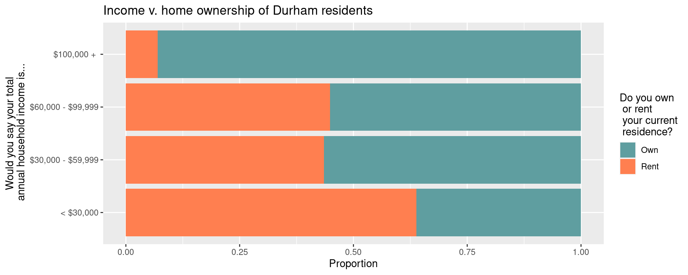
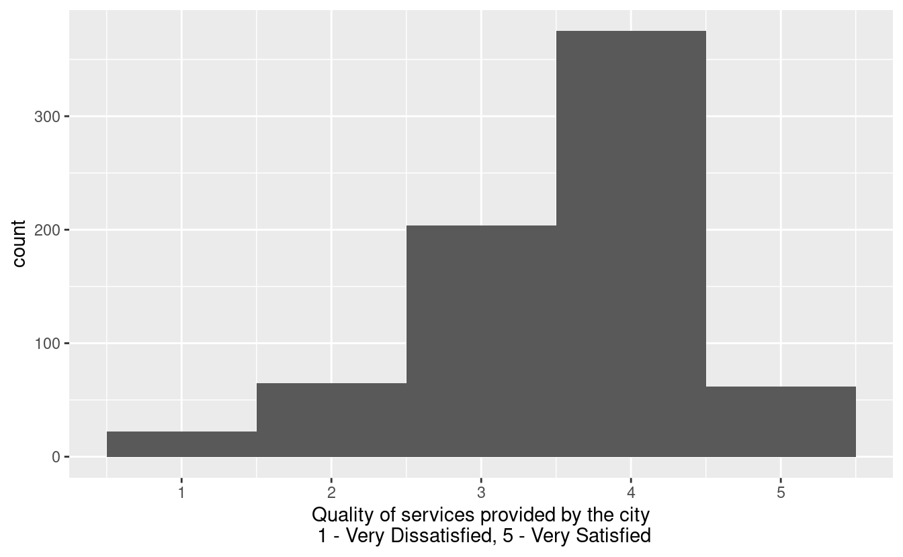
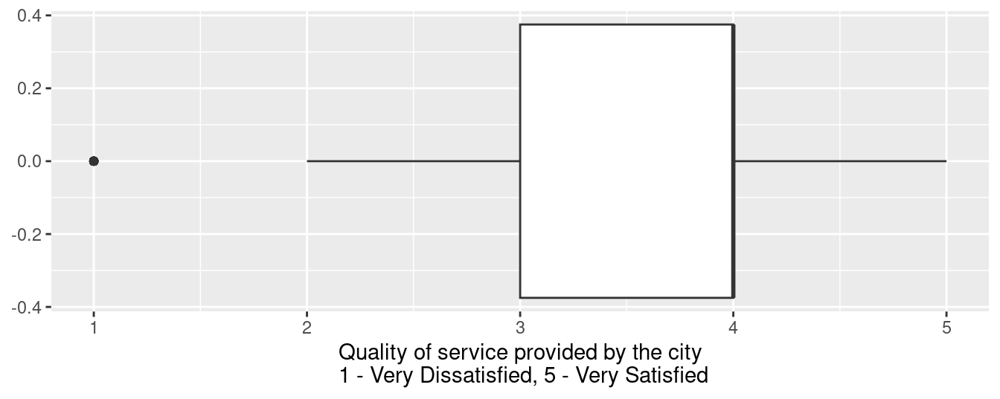
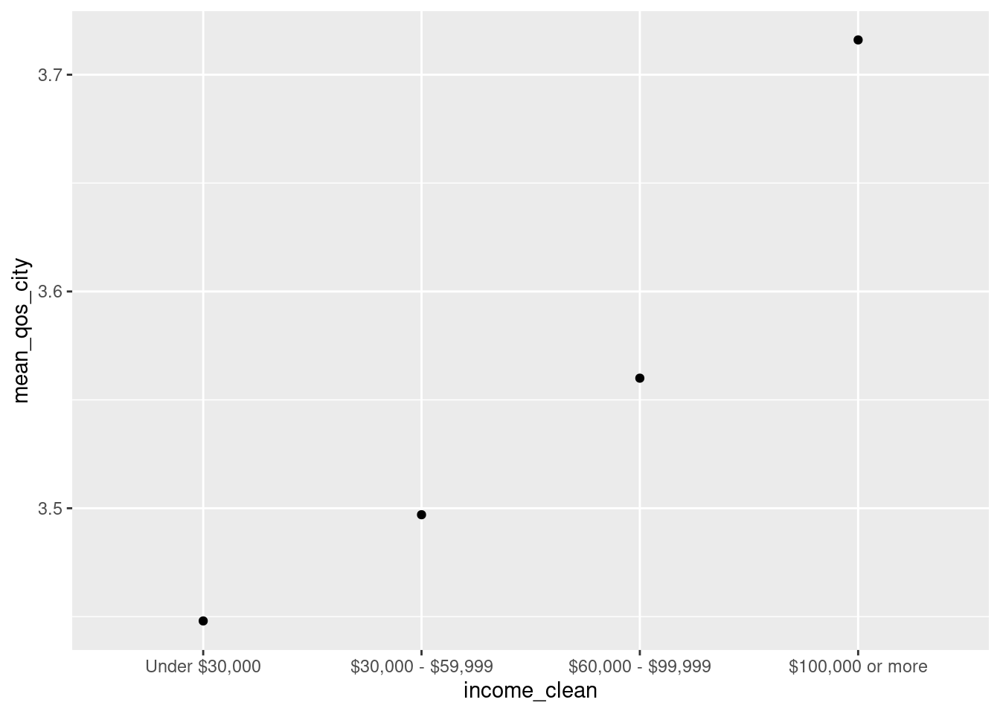

df |>
mutate(y = x + 2)Explore numerical data
Warm up
Recap from last time
Suppose you have a data frame called df and a single variable in it called x. How many variables will df have after running the following code?
. . .
Suppose you have a data frame called df and a single variable in it called x. How many variables will df have after running the following code?
df <- df |>
mutate(y = x + 2). . .
What is the <- operator called and what does it do?
Exploring (categorical and) numerical data
The main questions we’ll explore today are:
“What are the demographics and priorities of City of Durham residents?”
“How do City of Durham residents feel about quality of services by the city and how, if at all, does that vary by income?”
Goals
Wrapping up discussion on categorical data
Visualizing and summarizing numerical data
Improving visualizations for visual appeal and better communication
Packages
library(tidyverse)Data
The data for this case study come from the 2020 Durham City and County Resident Survey.
First, let’s load the data:
durham <- read_csv("durham-2020.csv")Rows: 803 Columns: 49
── Column specification ────────────────────────────────────────────────────────
Delimiter: ","
chr (7): please_define_other_32_5, primary_language, please_define_other_34...
dbl (42): id, overall_quality_of_services_3_01, overall_quality_of_services_...
ℹ Use `spec()` to retrieve the full column specification for this data.
ℹ Specify the column types or set `show_col_types = FALSE` to quiet this message.Yesterday we manipulated the data a bit.
durham <- durham |>
rename(
own_rent = do_you_own_or_rent_your_current_resi_31,
income = would_you_say_your_total_annual_hous_35,
# a new one
qos_city = overall_quality_of_services_3_01
) |>
mutate(
income = as_factor(income),
own_rent = as_factor(own_rent)
)Visualizing relationships between categorical variables
Exercise 1
Visualize and describe the relationship between income and home ownership of Durham residents.
Stretch goal: Customize the colors using named colors from http://www.stat.columbia.edu/~tzheng/files/Rcolor.pdf.
durham |>
select(income, own_rent) |>
drop_na() |>
ggplot(aes(y = income, fill = own_rent)) +
geom_bar(position = "fill") +
scale_y_discrete(
labels = c(
"1" = "< $30,000",
"2" = "$30,000 - $59,999",
"3" = "$60,000 - $99,999",
"4" = "$100,000 + "
)
) +
scale_fill_manual(
values = c("1" = "cadetblue", "2" = "coral"),
labels = c( "1" = "Own", "2" = "Rent")
) +
labs(
x = "Proportion",
y = "Would you say your total\n annual household income is...",
fill = "Do you own\n or rent\n your current\n residence?",
title = "Income v. home ownership of Durham residents"
)
Exercise 2
Calculate the proportions of home owners for each category of Durham residents. Describe the relationship between these two variables, this time with the actual values from the conditional distribution of home ownership based on income level.
durham |>
select(income, own_rent) |>
drop_na() |>
count(income, own_rent) |>
group_by(income) |>
mutate(prop = n/sum(n))# A tibble: 8 × 4
# Groups: income [4]
income own_rent n prop
<fct> <fct> <int> <dbl>
1 1 1 51 0.362
2 1 2 90 0.638
3 2 1 105 0.565
4 2 2 81 0.435
5 3 1 107 0.552
6 3 2 87 0.448
7 4 1 160 0.930
8 4 2 12 0.0698Exercise 3
Recode the levels of these two variables to be more informatively labeled and calculate the proportions from the previous exercise again.
durham <- durham |>
mutate(
income_clean = case_when(
income == "1" ~ "Under $30,000",
income == "2" ~ "$30,000 - $59,999",
income == "3" ~ "$60,000 - $99,999",
income == "4" ~ "$100,000 or more"
),
income_clean = fct_relevel(income_clean,
"Under $30,000",
"$30,000 - $59,999",
"$60,000 - $99,999",
"$100,000 or more"),
own_rent = if_else(own_rent == 1, "Own", "Rent")
)
# quality check
durham|>
count(income, income_clean)# A tibble: 5 × 3
income income_clean n
<fct> <fct> <int>
1 1 Under $30,000 141
2 2 $30,000 - $59,999 186
3 3 $60,000 - $99,999 194
4 4 $100,000 or more 172
5 <NA> <NA> 110# own_rent = case_when(
# own_rent == 1 ~ "Own",
# own_rent == 2 ~ "Rent"
# )
durham |>
select(income_clean, own_rent) |>
drop_na() |>
count(income_clean, own_rent) |>
group_by(income_clean) |>
mutate(prop = n/sum(n))# A tibble: 8 × 4
# Groups: income_clean [4]
income_clean own_rent n prop
<fct> <chr> <int> <dbl>
1 Under $30,000 Own 51 0.362
2 Under $30,000 Rent 90 0.638
3 $30,000 - $59,999 Own 105 0.565
4 $30,000 - $59,999 Rent 81 0.435
5 $60,000 - $99,999 Own 107 0.552
6 $60,000 - $99,999 Rent 87 0.448
7 $100,000 or more Own 160 0.930
8 $100,000 or more Rent 12 0.0698Visualizing numerical data
Exercise 4
One of the questions on the survey is “How satisfied are you with the overall quality of services provided by the city?” A response of 1 indicates Very Dissatisfied and a response of 5 indicates Very Satisfied. The responses for this question are in the variable qos_city. This could be considered an ordinal, categorical variable but can also be treated as a numerical variable in an analysis. Let’s do the latter!
Visualize and describe the distribution of qos_city. If you get a warning with your visualization, comment on what it means.
ggplot(durham, aes(x = qos_city)) +
geom_histogram(binwidth = 1) +
labs(
x = "Quality of services provided by the city\n 1 - Very Dissatisfied, 5 - Very Satisfied"
)Warning: Removed 75 rows containing non-finite values (`stat_bin()`).
Exercise 5
Calculate the mean and median of the distribution of qos_city. If these values are not exactly the same, can you explain what the difference might be attributed to?
durham |>
summarize(
mean_qos_city = mean(qos_city, na.rm = TRUE),
median_qos_city = median(qos_city, na.rm = TRUE)
)# A tibble: 1 × 2
mean_qos_city median_qos_city
<dbl> <dbl>
1 3.54 4More rare responses of “1 - Very dissatisfied” pull the mean response down away from the median.
Exercise 6
Based on the shape of the distribution of qos_city, which measure of spread (variability) is more appropriate? Calculate that value and interpret it in context of the data.
durham |>
summarise(
iqr_qos_city = IQR(qos_city, na.rm = T),
q1_qos_city = quantile(qos_city, 0.25, na.rm = T),
q3_qos_city = quantile(qos_city, 0.75, na.rm = T)
)# A tibble: 1 × 3
iqr_qos_city q1_qos_city q3_qos_city
<dbl> <dbl> <dbl>
1 1 3 4Exercise 7
Make a box plot of qos_city and comment on how the values you calculated map on to the box plot.
ggplot(durham, aes(x = qos_city)) +
geom_boxplot() +
labs(
x = "Quality of service provided by the city\n 1 - Very Dissatisfied, 5 - Very Satisfied"
)Warning: Removed 75 rows containing non-finite values (`stat_boxplot()`).
Exercise 8
How the average level of happiness with quality of services provided by the city vary by income group?
Stretch goal: Visualize mean qos_city by income group.
Add your response here.
durham |>
drop_na(income_clean) |>
group_by(income_clean) |>
summarize(
mean_qos_city = mean(qos_city, na.rm = TRUE),
median_qos_city = median(qos_city, na.rm = TRUE)
)# A tibble: 4 × 3
income_clean mean_qos_city median_qos_city
<fct> <dbl> <dbl>
1 Under $30,000 3.45 4
2 $30,000 - $59,999 3.50 4
3 $60,000 - $99,999 3.56 4
4 $100,000 or more 3.72 4durham |>
drop_na(income_clean) |>
group_by(income_clean) |>
summarize(
mean_qos_city = mean(qos_city, na.rm = TRUE)
) |>
ggplot(aes(x = income_clean, y = mean_qos_city)) +
geom_point()
Recap
Conceptual
Some of the terms we introduced are:
Marginal distribution: Distribution of a single variable.
Conditional distribution: Distribution of a variable conditioned on the values (or levels, in the context of categorical data) of another.
R
In this lecture we:
- Defined factors – the data type that R uses for categorical variables, i.e., variables that can take on values from a finite set of levels.
- Reviewed data imports, visualization, and wrangling functions encountered before:
- Import:
read_csv(): Read data from a CSV (comma separated values) file - Visualization:
ggplot(): Create a plot using the ggplot2 packageaes(): Map variables from the data to aesthetic elements of the plot, generally passed as an argument toggplot()or togeom_*()functions (define onlyxoryaesthetic)geom_bar(): Represent data with bars, after calculating heights of bars under the hoodgeom_histogram(): Represent data with a histogramgeom_boxplot(): Represent data with a box plotgeom_point(): Represent data with pointslabs(): Labelxaxis,yaxis, legend forcolorof plot, title` of plot, etc.
- Wrangling:
mutate(): Mutate the data frame by creating a new column or overwriting one of the existing columnscount(): Count the number of observations for each level of a categorical variable (factor) or each distinct value of any other type of variablegroup_by(): Perform each subsequent action once per each group of the variable, where groups can be defined based on the levels of one or more variablessummarize(): Calculate summary statistics
- Import:
- Introduced new data wrangling functions:
rename(): Rename columns in a data frameas_factor(): Convert a variable to a factordrop_na(): Drop rows that haveNAin one ore more specified variablesif_else(): Write logic for what happens if a condition is true and what happens if it’s notcase_when(): Write a generalizedif_else()logic for more than one conditionfct_relevel: Change the order of levels in a factor
- Introduced new data visualization functions:
geom_col(): Represent data with bars (columns), for heights that have already been calculated (must definexandyaesthetics)scale_fill_viridis_d(): Customize the discretefillscale, using a color-blind friendly, ordinal discrete color scalescale_y_discrete(): Customize the discreteyscalescale_fill_manual(): Customize thefillscale by manually adjusting values for colors
Quarto
We also introduced chunk options for managing figure sizes:
fig-width: Width of figurefig-asp: Aspect ratio of figure (height / width)fig-height: Height of figure – but I recommend usingfig-widthandfig-asp, instead offig-widthandfig-height
Acknowledgements
This dataset was cleaned and prepared for analysis by Duke StatSci PhD student Sam Rosen.